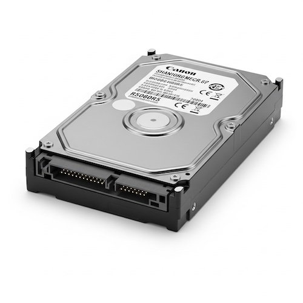

Data destruction Connecticut businesses and organizations trust High Tide Commodities Management to permanently eliminate sensitive information from storage media. With over 25 years of industry experience, our certified data destruction services ensure your confidential data is completely irrecoverable, protecting your company from data breaches, identity theft, and compliance violations.
On-Site and Off-Site Data Destruction
We offer flexible data destruction Connecticut solutions designed to meet your specific security requirements. Our on-site destruction services bring professional-grade equipment directly to your location, allowing your team to witness the entire destruction process for maximum peace of mind. For organizations that prefer off-site processing, we provide secure chain-of-custody transportation to our certified facilities in Branford, Connecticut, with full tracking documentation at every step.
Data Destruction Methods
High Tide employs industry-leading destruction methods that meet or exceed NIST Special Publication 800-88 guidelines for media sanitization:
- Hard drive shredding: Physical destruction that renders platters and components completely unrecoverable
- Degaussing: Powerful magnetic field erasure for magnetic media including HDDs and tapes
- Data wiping: Software-based overwriting using DoD 5220.22-M and NIST 800-88 Clear/Purge standards
- SSD destruction: Specialized methods designed for flash-based storage that cannot be degaussed
Media Types We Destroy
Our data destruction services handle all types of storage media used in modern business environments:
- Hard disk drives (HDDs) and solid-state drives (SSDs)
- Magnetic tapes, backup cartridges, and LTO media
- USB drives, memory cards, and flash storage
- Optical media including CDs, DVDs, and Blu-ray discs
- Mobile devices, smartphones, and tablets
- Paper documents and confidential files
Certificate of Destruction
Every data destruction project includes a detailed Certificate of Destruction documenting the date, time, method, serial numbers, and asset tags of all destroyed items. This documentation provides the audit trail your organization needs to demonstrate compliance with data protection regulations, internal security policies, and industry-specific requirements.
Compliance Standards We Meet
Our data destruction Connecticut processes are designed to satisfy the strictest regulatory frameworks, including:
- NIST 800-88: National Institute of Standards and Technology media sanitization guidelines
- DoD 5220.22-M: Department of Defense clearing and sanitization specifications
- HIPAA: Health Insurance Portability and Accountability Act for healthcare data
- FACTA: Fair and Accurate Credit Transactions Act for financial records
- SOX: Sarbanes-Oxley Act for corporate financial data
- GLBA: Gramm-Leach-Bliley Act for financial institution data
Industries We Serve
Whether you operate in healthcare, finance, government, education, legal, or any regulated industry, High Tide delivers data destruction Connecticut organizations depend on to maintain compliance and protect sensitive information. We understand that each industry has unique data handling requirements, and we tailor our destruction processes to meet your specific obligations. From a single box of hard drives to a full-scale data center decommissioning project, we have the capacity and expertise to handle data destruction at any scale.
The Risk of Improper Data Destruction
Failing to properly destroy data before disposing of IT equipment exposes your organization to significant risks. Data breaches resulting from improperly sanitized hard drives can lead to regulatory fines, lawsuits, reputational damage, and loss of customer trust. Professional data destruction eliminates these risks entirely and provides documented proof that your organization takes data security seriously.
Why Choose High Tide for Data Destruction?
Connecticut businesses choose High Tide Commodities Management for data destruction because we deliver:
- Over 25 years of experience in secure asset management
- Certified destruction processes with full documentation
- Flexible on-site and off-site service options
- Transparent chain-of-custody tracking from pickup to destruction
- Competitive pricing for businesses of all sizes
- Complete IT asset disposition services including value recovery
Related Services
Data destruction is one component of our comprehensive IT asset management solutions. Learn more about our electronic recycling services for environmentally responsible e-waste disposal, or our data center decommissioning services for complete facility shutdowns. For a full overview of everything we offer, visit our services page.
Contact us today to schedule your secure data destruction service or request a free quote for your Connecticut business. Call (203) 687-9370 to speak with our team.